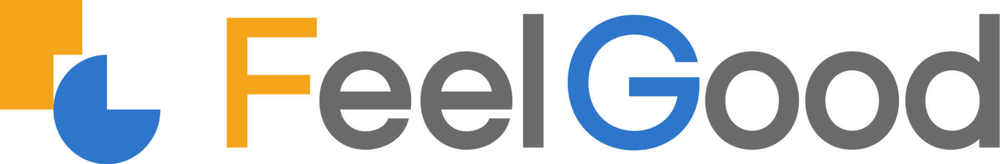

강점 활용
높은 수행을 과도한 과제 부여가 아닌, 도전 수준과 자기조절을 함께 보는 신호로 읽습니다.

점수 하나로 학생을 판단하지 않습니다. 인지처리 특성, 실제 관찰, 수업 맥락을 함께 읽어 다음 지원을 설계합니다.
검사는 진단의 단독 근거가 아닙니다. 결과는 추가 관찰과 교육 지원의 출발점입니다.
아래 수치는 K-PASS 4–12세 규준에만 적용됩니다.
높은 수행을 과도한 과제 부여가 아닌, 도전 수준과 자기조절을 함께 보는 신호로 읽습니다.
특징이 없다는 뜻이 아니라 상황에 따라 여러 전략을 사용할 가능성입니다.
환경·컨디션·참여 상태를 확인하고 필요한 지원과 추가 평가를 안내합니다.
계획·동시처리 강점을 활용해 정보를 시각 구조로 제시하고, 순서 기억은 짧은 단계와 체크리스트로 지원합니다.
개인 식별정보 없이 네 영역 분포와 지원 군집을 확인합니다.
공통 수업 지원같은 학습목표를 유지하며 설명·자료·힌트·단계 수를 조절합니다.
소그룹·개별 예외주 2–3회, 8–12분. 한 번에 핵심 프로그램 하나만 연결합니다.
참여·전략·전이 관찰2023년 전국 4–12세 표본에 기반한 K-PASS 근거입니다. 결과 해석에는 95% 신뢰구간, 영역 간 패턴, 실제 관찰을 함께 사용합니다.
시각 구조와 목표를 먼저 보여주고, 순서 기억은 단계별로 나눕니다.
짧은 집중 구간, 방해 자극 조절, 절차의 순서를 활용합니다.
우세 영역을 억지로 지정하지 않고 실제 행동 정보를 함께 봅니다.
공통 지원이 필요한 패턴을 집계합니다.
학습목표는 유지하고 자료·힌트·단계를 조절합니다.
주 2–3회 · 8–12분
참여, 전략 사용, 다른 맥락 적용, 생활 적용을 구분해 봅니다.
결과지의 점수를 읽는 데서 끝나지 않고, 학생과 성인의 인지특성을 이해해 수업·상담·자기관리 지원으로 연결하는 교사용 가이드입니다.
“한 사람 안에 어떤 가능성이 있는지를 발견할 때, 성장의 방향이 보이기 시작합니다.”
기준과 근거를 확인합니다.
강점과 지원을 함께 봅니다.
관찰 가능한 다음 행동을 만듭니다.
검사 하나로 진단하거나 성향을 고정하지 않습니다. 각 결과는 교육적 지원의 출발점이며, 교사의 관찰과 현재 목표가 해석의 중심에 놓입니다.
K-PASS는 2023년 전국 4–12세 아동 2,700명의 자료를 바탕으로 연령 규준을 구성했습니다. 4세부터 12세 11개월까지를 3개월 단위 27개 집단으로 세분했습니다.
270명을 평균 20일 뒤 다시 검사한 검사–재검사 신뢰도입니다. 단일 점수보다 95% 신뢰구간, 영역 간 패턴, 실제 관찰을 함께 보아야 합니다.
적용 범위: K-PASS 근거만 표기 · D-CAS 근거로 확대하지 않음
시각 구조와 목표를 먼저 제시하고, 절차는 짧은 단계와 체크리스트로 지원합니다.
도전 수준과 자기조절을 함께 봅니다.
상황에 따라 여러 전략을 사용할 수 있는 균형성을 봅니다.
환경과 참여 상태를 확인하고 지원·추가 평가를 안내합니다.
개인을 식별하지 않는 분포로 공통 지원 우선순위를 확인합니다.
같은 학습목표를 유지하고 설명·자료·힌트·단계 수를 조절합니다.
주 2–3회, 8–12분. 참여·전략 사용·전이를 따로 기록합니다.
NUVIA 활동은 검사 점수의 자동 처방이 아닙니다. 현재 목표와 관심, 교실·생활 맥락을 함께 반영해 선택합니다.